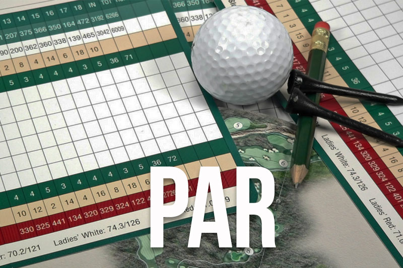

Breaking par in golf is a feat that less than 1% of all golflers can do, making it an extremely rare milestone achieved primarily by low-handicap or professional players. This goal is something that I have worked on my whole life. Currently I shoot low 80's when I go out and play (83,84,85) and with par being 72 there is definitely work to be done. However I believe this feat can be accomplished by the end of this year if I stick to my 3 Steps: Practice, Health and Execution
(Based on Linear Movement Since Beginning as a +28 Handicap (Scratch = 0 Handicap))